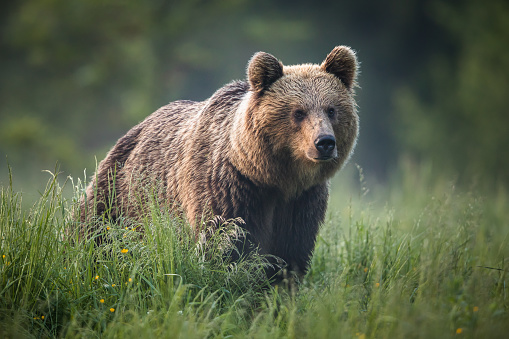
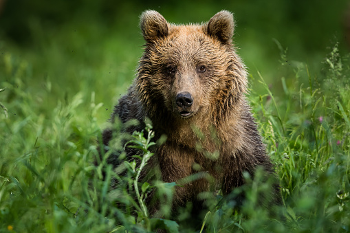

Bears
-

Ollie
Ollie is a brown bear, he loves salmon and enjoys his fair share of honey! Ollie was recently rescued from a National Park in the midwest where there have been poacher sightings, and he was injured. We are currently keeping him for observation as he makes his full recovery!
-

Mona
Mona is our second brown bear, she is quite playful and enjoys large branches that she can throw around or finding large rocks to roll. She is still quite young so she is definitely enjoying her youth! Mona is also a rescue, she was rescued from the California forest fires that unfortunately caused her to be separated from her parents, and now she is here with us making a new family and becoming quite close with Ollie.
For more information about bears check out this National Geographic article!
Giraffes
- Frankie
- Coconut
Giraffes are the world's tallest mammals, thanks to their towering legs and long necks. A giraffe's legs alone are taller than many humans—about 6 feet . These long legs allow giraffes to run as fast as 35 miles an hour over short distances and cruise comfortably at 10 miles an hour over longer distances.
For more information about the beautiful long neck animal, the Giraffe, check out National Geographic for more information!
Lions
- Mella
- Carl
Lions are unique among cats in that they live in a group, or pride. The members of a pride typically spend the day in several scattered groups that may unite to hunt or share a meal. A pride consists of several generations of lionesses, some of which are related, a smaller number of breeding males, and their cubs.
If you want to learn more about lions check out this Britannica article!
Monkeys
- Cookie
- Earl
- Banana Pudding
Monkey covers a wide array of species of primates; all very highly intelligent and some even capable of learning forms of sign language to communicate.
To learn more about all different species of primates check out this Article!

Alligators
- Wren
- Aspen
- Mika
The average adult size for a female is 8.2 feet (2.6 meters), and the average size for a male is 11.2 feet (3.4 meters). Exceptionally large males can reach a weight of nearly half a ton or 1,000 pounds (454 kilograms). The American alligator is found in the United States from North Carolina to the Rio Grande in Texas.
To learn more about Alligators check out this Smithsonian National Zoo & Conservation Biology Institute article!